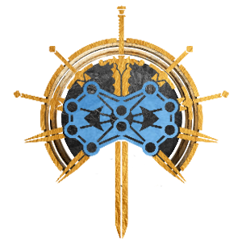
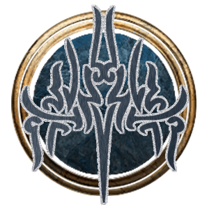

Game Modding
Baldur's Gate 3 Mod - Knights Radiant Class
Baldur's Gate 3 is an incredible game, and has recently released a modding kit to allow for greater and more detailed mod creation. With this release, I decided to create my own mod to bring together two of my favourite pieces of media: Baldur's Gate 3, and the Stormlight Archive series by Brandon Sanderson.
This mod adds the Knights Radiant playable class to Baldur's Gate 3, with the subclass of Windrunner. Further subclasses will be added in the future.
The mod is currently in production but a link will be posted here when it is published.
Mod Design
Before I could start creating the mod, I had to design the details and make decisions such as starting stats, spells, skills, and level ups. I decided to start with the Windrunner subclass, as this is the Knights Radiant order that we as fans currently have the most information on.
Beginning Stats
The Windrunner subclass is mostly based off Kaladin, and so the stats Windrunners begin with are also based off his character. They most closely resemble the Paladin class and share many similarities. The two important ability scores for Windrunners are Strength for their physical attacks, and Wisdom for their spellcasting. They begin with proficiencies in all types of armour (including shields), simple and martial weapons, and can choose skill proficiencies. They begin with medium armour and a spear, mimicking Kaladin's preferred weapons.
Oath
To begin with, Windrunners follow the Oath of Devotion, dedicated to courage, compassion, and duty. If an oath is broken, they will follow the Oathbreaker path for now, but eventually I would like to add the Oath Framework by the Community Library team to create more custom and lore accurate Oath instances.
Stormlight
Stormlight is the resource that Knights Radiant use for their powers, and so it becomes a custom spell resource in BG3. Charges of Stormlight can be used to power the Knight's abilities or consumed to heal themselves. Knights Radiant begin as inneficient Stormlight users, only able to refill every Long Rest(LR), but eventually become very efficient at gathering Stormlight, and are able to recharge every Short Rest(SR) instead.
Windrunner Progression
The following details the level progression for Windrunners. The progression is attempting to follow Kaladin's Oath progression and abilities through Rhythm of War.
Level 1: 2 Charges of Stormlight(LR); Cantrip Blade Ward; Heal Self(WEAK)
Level 2: Ensnaring Strike(MELEE); Cantrip Thorn Whip
Level 3: 3 Charges of Stormlight(LR); Cantrip Resistance(SELF ONLY); Ray of Slow(EDIT TO RAY OF NO MOVEMENT?)
Level 4: EARN SHARDBLADE; Branding Smite; Hold Person
Level 5: 4 Charges of Stormlight(LR); Compelled Duel; Divine Favour(SELF); EXTRA ATTACK
Level 6: Missile Catching; Grant Flight(SELF, 3 TURNS); STOMRLIGHT EFFICIENCY
Level 7: 5 Charges of Stormlight(SR); Destructive Wave; Glyph of Warding(SLOW ONLY)
Level 8: SQUIRE ABILITIES -> Grant Flight(ALLY, 3 TURNS); Divine Favour(ALLY); Hold Monster
Level 9: EARN SHARDPLATE; Aura of Courage
Level 10: 6 Charges of Stormlight(SR); Telekinesis; Black Hole
Level 11: Permanent Self Flight(NO STORMLIGHT)
Level 12: 7 Charges of Stormlight(SR); Improved Shardplate; Improved Shardblade
Shardblade
The Shardblade follows the set up of a Warlock's pact weapon, and uses it as a parent template. With this, Shardblade can take whatever shape the creator chooses. It also combines Sacred Weapon stats at a point, to make it stronger. Shardblade also emits a bright light similar to Nyrulna, and will always return to the user when thrown. There is potential for adding a Deadeye Shardblade as loot in the game, which takes a turn to summon, does not return when thrown, and if used by a Knight Radiant will root them in place and give them disadvantage.
Shardplate
Shardplate will act similarly to Armor of Faith. Users can still wear their own armour below it, but Shardplate will increase their AC and give them further buffs based on their order (subclass). A potential feature of Shardplate will be that its armor class increases based on how much Stormlight the wearer has remaining (if this is not possible, it's strength will scale based on the Knight Radiant level). It will also emit it's own light, similar to Shardblades.
Art

The Knights Radiant Symbol, styled and recoloured into a BG3-esque Class Icon.

The Windrunner's Symbol, styled and recoloured to be a Subclass Icon.